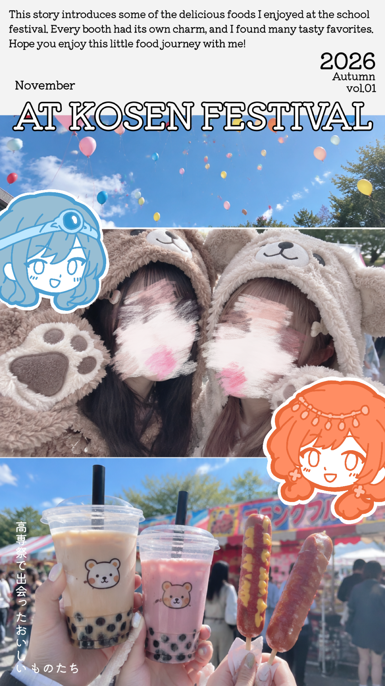
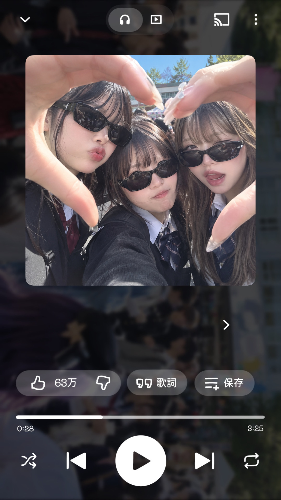

プリクラ
になれ
なかった
サイト
Re:Born
生まれ変わったら、
ゲームの世界だった。
はじめに
もし生まれ
変わった先が
ゲームの世界
だったら、？
ここでは、あなたの誕生日から
ぴったりのRPG職業を診断します。
さらに、高専祭で撮った写真をプリクラ感覚でデコレーションして、
今日だけの特別な1枚を作ることもできます！
診断だけでも、写真加工だけでもOK。
好きな遊び方で、いろまぜを楽しんでください！
２つの遊び方
02
写真を加工する
写真を選んで、好きなスタンプや
文字をペタペタ！
RPG職業診断のキャラクターも登場します。
高専祭の思い出を、特別な1枚にしよう！
※事前に写真を9:16にしておくのをおすすめします
写真を加工するインスタ投稿例

写真を３等分にするのは、Instagramで行なっています。
顔のモザイクも別アプリで行なっています。
自分のRPG職業を貼ってみよう！

正方形の写真は、Instagramのストーリー投稿前に挿入できるものです。
プレイリスト風のフレームは、半透明になっているので
背景に入れたい写真を加工時お使いください。